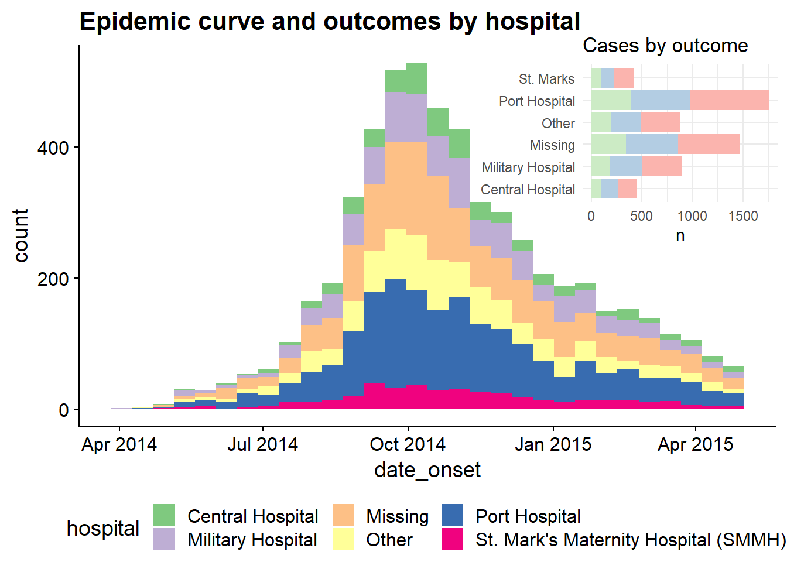

31 Các tips với ggplot
Trong trang này, chúng tôi sẽ đề cập đến các mẹo và thủ thuật để làm cho biểu đồ ggplots của bạn đẹp và bóng bẩy hơn. Xem thêm chương ggplot cơ bản để có các kiến thức nền tảng.
Có một số hướng dẫn ggplot2 mở rộng được liên kết trong phần Nguồn. Bạn cũng có thể tải xuống cheatsheet trực quan hóa số liệu với ggplot từ trang web của RStudio. Chúng tôi thực sự khuyên bạn nên tìm thêm cảm hứng tại các trang web sau: R graph gallery và Data-to-viz.
31.1 Chuẩn bị
Gọi packages
Đoạn code này hiển thị việc gọi các package cần thiết cho các phân tích. Trong cuốn sách này, chúng tôi nhấn mạnh việc sử dụng hàm p_load() từ package pacman, giúp cài đặt các package cần thiết và gọi chúng ra để sử dụng. Bạn cũng có thể gọi các packages đã cài đặt với hàm library() của base R. Xem thêm chương R cơ bản để có thêm thông tin về các packages trong R.
Nhập dữ liệu
Để bắt đầu, chúng ta nhập bộ dữ liệu có tên linelist đã làm sạch bao gồm các trường hợp từ vụ dịch Ebola mô phỏng. Để tiện theo dõi, bấm để tải dữ liệu linelist “đã được làm sạch” (dưới dạng tệp .rds). Nhập dữ liệu bằng hàm import() từ package rio (nó xử lý nhiều loại tệp như .xlsx, .csv, .rds - xem thêm chương Nhập xuất dữ liệu để biết thêm chi tiết.
50 hàng đầu tiên của bộ dữ liệu được hiển thị như bên dưới.
31.2 Thang đo đối với màu sắc, tô màu, trục, v.v.
Trong ggplot2, khi yếu tố thẩm mỹ của dữ liệu được vẽ (vd: kích thước, màu sắc, hình dạng, tô màu, trục biểu đồ) được gắn với các cột trong bộ dữ liệu, thì hiển thị chính xác có thể được điều chỉnh với lệnh “scale” tương ứng. Trong phần này, chúng tôi giải thích một số điều chỉnh thang đo phổ biến.
31.2.1 Phối màu
Một điều ban đầu có thể khó hiểu khi dùng ggplot2 là kiểm soát các phối màu. Lưu ý rằng phần này thảo luận về màu sắc của các đối tượng biểu đồ (geoms/shapes) ví dụ như điểm, cột, đường, ô, v.v. Để điều chỉnh màu của các văn bản, tiêu đề hoặc màu nền, hãy xem phần Chủ đề trong chương ggplot cơ bản.
Để kiểm soát “màu sắc” của các đối tượng biểu đồ, bạn sẽ điều chỉnh hoặc là color = (màu bên ngoài) hoặc fill = (màu bên trong). Một ngoại lệ đối với mẫu này là geom_point(), nơi bạn thực sự chỉ có thể điều khiển color =, để xác định màu của điểm (bên trong và bên ngoài).
Khi thiết lập màu hoặc tô màu, bạn có thể sử dụng tên màu được R nhận dạng như "red" (xem danh sách đầy đủ hoặc gõ ?colors), hoặc cụ thể một mã màu hex như "#ff0505".
# histogram -
ggplot(data = linelist, mapping = aes(x = age))+ # set data and axes
geom_histogram( # display histogram
binwidth = 7, # width of bins
color = "red", # bin line color
fill = "lightblue") # bin interior color (fill) 
Như đã được giải thích trong chương ggplot cơ bản phần chọn dữ liệu cho biểu đồ, các yếu tố thẩm mỹ như fill = và color = có thể được định nghĩa ở bên ngoài của biểu thức mapping = aes() hoặc bên trong câu lệnh. Nếu đặt bên ngoài hàm aes(), giá trị được gán nên là giá trị tĩnh (vd: color = "blue") và sẽ áp dụng cho toàn bộ dữ liệu được vẽ bởi geom. Nếu đặt bên trong, các aesthetic nên được gán tới cột, ví dụ như color = hospital, và sự biểu diễn sẽ thay đổi theo giá trị của hàng đó trong dữ liệu. Một vài ví dụ:
# Static color for points and for line
ggplot(data = linelist, mapping = aes(x = age, y = wt_kg))+
geom_point(color = "purple")+
geom_vline(xintercept = 50, color = "orange")+
labs(title = "Static color for points and line")
# Color mapped to continuous column
ggplot(data = linelist, mapping = aes(x = age, y = wt_kg))+
geom_point(mapping = aes(color = temp))+
labs(title = "Color mapped to continuous column")
# Color mapped to discrete column
ggplot(data = linelist, mapping = aes(x = age, y = wt_kg))+
geom_point(mapping = aes(color = gender))+
labs(title = "Color mapped to discrete column")
# bar plot, fill to discrete column, color to static value
ggplot(data = linelist, mapping = aes(x = hospital))+
geom_bar(mapping = aes(fill = gender), color = "yellow")+
labs(title = "Fill mapped to discrete column, static color")
Thang đo
Một khi bạn gán cột tới một yếu tố thẩm mỹ của biểu đồ (vd: x =, y =, fill =, color =…), biểu đồ của bạn sẽ hiển thị một thang đo/chú giải. Xem ở trên cách thang đo có thể là các giá trị liên tục, rời rạc, ngày tháng, v.v. tùy thuộc vào kiểu dữ liệu của cột được chỉ định. Nếu bạn có nhiều yếu tố thẩm mỹ được gán tới cột, biểu đồ của bạn sẽ có nhiều thang đo.
Bạn có thể kiểm soát các thang đo bằng hàm scales_() thích hợp. Các hàm scale của ggplot() có 3 phần được viết như sau: scale_AESTHETIC_METHOD().
- Phần đầu tiên,
scale_(), là cố định.
- Phần thứ hai, AESTHETIC, là tên yếu tố thẩm mỹ bạn muốn điều chỉnh thang đó (
_fill_,_shape_,_color_,_size_,_alpha_…) - các tùy chọn ở đây cũng bao gồm_x_và_y_.
- Phần thứ ba, METHOD, sẽ là một trong số các tùy chọn sau
_discrete(),continuous(),_date(),_gradient(), hoặc_manual(), tùy thuộc vào kiểu dữ liệu của cột và cách bạn muốn kiểm soát nó. Có những tùy chọn khác, tuy nhiên những lựa chọn trên thường được sử dụng nhất.
Hãy chắc chắn rằng bạn sử dụng đúng hàm scale! Nếu không, lệnh scale của bạn sẽ không xuất hiện để thay đổi bất cứ điều gì. Nếu bạn có nhiều thang đo, bạn có thể sử dụng nhiều hàm scale để điều chỉnh chúng! Ví dụ:
Các đối số của hàm Scale
Mỗi loại thang đo có những đối số riêng của chúng, mặc dù cũng có những sự trùng nhau. Truy vấn hàm chẳng hạn như ?scale_color_discrete trong cửa sổ R console để xem tài liệu về các đối số của hàm.
Với thang đo liên tục, sử dụng breaks = để cung cấp một chuỗi giá trị tới seq() (đặt to =, from =, và by = như được minh họa trong ví dụ bên dưới. Thiết lập expand = c(0,0) để loại bỏ không gian đệm xung quanh các trục (điều này có thể được sử dụng trên bất kỳ thang đo của trục _x_ hoặc _y_ nào)
Với thang đo rời rạc, bạn có thể điều chỉnh thứ tự của các giá trị với breaks =, và cách các giá trị hiển thị với đối số labels =. Cung cấp một vectơ ký tự cho mỗi cái đó (xem ví dụ bên dưới). Bạn cũng có thể loại bỏ NA dễ dàng bằng cách đặt na.translate = FALSE.
Các điều chỉnh với thang đo ngày tháng được trình bãy rõ hơn trong chương Đường cong dịch bệnh.
Điều chỉnh thủ công
Một trong những thủ thuật hữu ích nhất là sử dụng các hàm scaling “một cách thủ công” để gán màu sắc như bạn mong muốn. Có những hàm với cú pháp scale_xxx_manual() (vd: scale_colour_manual() hoặc scale_fill_manual()). Mỗi đối số dưới đây được minh họa trong các code ví dụ bên dưới.
- Gán màu cho các giá trị dữ liệu với đối số
values =
- Cụ thể màu sắc cho giá trị
NAvớina.value =
- Thay đổi cách các giá trị được viết trong chú giải với đối số
labels = - Thay đổi tiêu đề chú giải bằng
name =
Dưới đây, chúng ta tạo một biểu đồ cột và hiển thị cách nó xuất hiện theo mặc định, sau đó với ba thang đo được điều chỉnh - thang đo trục y liên tục, thang đo trục x rời rạc, và điều chỉnh thủ công cách tô màu (màu bên trong cột).
# BASELINE - no scale adjustment
ggplot(data = linelist)+
geom_bar(mapping = aes(x = outcome, fill = gender))+
labs(title = "Baseline - no scale adjustments")
# SCALES ADJUSTED
ggplot(data = linelist)+
geom_bar(mapping = aes(x = outcome, fill = gender), color = "black")+
theme_minimal()+ # simplify background
scale_y_continuous( # continuous scale for y-axis (counts)
expand = c(0,0), # no padding
breaks = seq(from = 0,
to = 3000,
by = 500))+
scale_x_discrete( # discrete scale for x-axis (gender)
expand = c(0,0), # no padding
drop = FALSE, # show all factor levels (even if not in data)
na.translate = FALSE, # remove NA outcomes from plot
labels = c("Died", "Recovered"))+ # Change display of values
scale_fill_manual( # Manually specify fill (bar interior color)
values = c("m" = "violetred", # reference values in data to assign colors
"f" = "aquamarine"),
labels = c("m" = "Male", # re-label the legend (use "=" assignment to avoid mistakes)
"f" = "Female",
"Missing"),
name = "Gender", # title of legend
na.value = "grey" # assign a color for missing values
)+
labs(title = "Adjustment of scales") # Adjust the title of the fill legendThang đo liên tục trên trục
Khi dữ liệu được ánh xạ tới các trục của biểu đồ, chúng cũng có thể được điều chỉnh bằng các lệnh scales. Một ví dụ phổ biến là điều chỉnh hiển thị của một trục (ví dụ: trục y) được ánh xạ tới một cột có dữ liệu liên tục.
Chúng ta có thể muốn điều chỉnh độ chia hoặc hiển thị của giá trị trong ggplot bằng cách sử dụng scale_y_continuous(). Như đã lưu ý ở trên, sử dụng đối số breaks = để cung cấp một chuỗi các giá trị sẽ đóng vai trò là “ngắt các khoảng giá trị” dọc theo thang đo. Đây là những giá trị mà các số sẽ hiển thị. Đối với đối số này, bạn có thể cung cấp một vectơ c() chứa các giá trị để chia thang đo theo mong muốn hoặc bạn có thể cung cấp một chuỗi số thông thường bằng cách sử dụng hàm seq() từ base R. Hàm seq() này chấp nhận to =, from =, và by =.
# BASELINE - no scale adjustment
ggplot(data = linelist)+
geom_bar(mapping = aes(x = outcome, fill = gender))+
labs(title = "Baseline - no scale adjustments")
#
ggplot(data = linelist)+
geom_bar(mapping = aes(x = outcome, fill = gender))+
scale_y_continuous(
breaks = seq(
from = 0,
to = 3000,
by = 100)
)+
labs(title = "Adjusted y-axis breaks")
Hiển thị phần trăm
Nếu giá trị dữ liệu ban đầu của bạn là tỷ lệ, bạn có thể dễ dàng hiển thị chúng dưới dạng phần trăm với “%” bằng cách cung cấp labels = scales::percent trong lệnh scales command, như được trình bày dưới đây.
Mặc dù có một giải pháp thay thế là chuyển đổi các giá trị thành ký tự và thêm ký tự “%” vào cuối, cách tiếp cận này sẽ gây ra phức tạp vì dữ liệu của bạn sẽ không còn là các giá trị số liên tục.
# Original y-axis proportions
#############################
linelist %>% # start with linelist
group_by(hospital) %>% # group data by hospital
summarise( # create summary columns
n = n(), # total number of rows in group
deaths = sum(outcome == "Death", na.rm=T), # number of deaths in group
prop_death = deaths/n) %>% # proportion deaths in group
ggplot( # begin plotting
mapping = aes(
x = hospital,
y = prop_death))+
geom_col()+
theme_minimal()+
labs(title = "Display y-axis original proportions")
# Display y-axis proportions as percents
########################################
linelist %>%
group_by(hospital) %>%
summarise(
n = n(),
deaths = sum(outcome == "Death", na.rm=T),
prop_death = deaths/n) %>%
ggplot(
mapping = aes(
x = hospital,
y = prop_death))+
geom_col()+
theme_minimal()+
labs(title = "Display y-axis as percents (%)")+
scale_y_continuous(
labels = scales::percent # display proportions as percents
)

Thang đo Log
Để biến đổi một trục liên tục sang thang đo log, hãy thêm trans = "log2" vào lệnh scale. Ví dụ: chúng ta tạo một data frame của các vùng với các giá trị preparedness_index và số trường hợp tích lũy tương ứng.
plot_data <- data.frame(
region = c("A", "B", "C", "D", "E", "F", "G", "H", "I"),
preparedness_index = c(8.8, 7.5, 3.4, 3.6, 2.1, 7.9, 7.0, 5.6, 1.0),
cases_cumulative = c(15, 45, 80, 20, 21, 7, 51, 30, 1442)
)
plot_data## region preparedness_index cases_cumulative
## 1 A 8.8 15
## 2 B 7.5 45
## 3 C 3.4 80
## 4 D 3.6 20
## 5 E 2.1 21
## 6 F 7.9 7
## 7 G 7.0 51
## 8 H 5.6 30
## 9 I 1.0 1442Các trường hợp tích lũy ở vùng “I” lớn hơn đáng kể so với tất cả các vùng khác. Trong những trường hợp như thế này, bạn có thể chọn hiển thị trục y bằng thang đo log để người đọc có thể thấy sự khác biệt giữa các vùng với ít trường hợp tích lũy hơn.
# Original y-axis
preparedness_plot <- ggplot(data = plot_data,
mapping = aes(
x = preparedness_index,
y = cases_cumulative))+
geom_point(size = 2)+ # points for each region
geom_text(
mapping = aes(label = region),
vjust = 1.5)+ # add text labels
theme_minimal()
preparedness_plot # print original plot
# print with y-axis transformed
preparedness_plot+ # begin with plot saved above
scale_y_continuous(trans = "log2") # add transformation for y-axis
Thang đo Gradient
Tô màu thang đo gradient có thể liên quan đến sắc thái bổ sung. Các giá trị mặc định thường khá dễ chịu, nhưng bạn có thể muốn điều chỉnh các giá trị, điểm cắt, v.v.
Để trình bày cách điều chỉnh thang màu liên tục, chúng tôi sẽ sử dụng bộ dữ liệu từ chương Truy vết tiếp xúc chứa độ tuổi của các trường hợp và các trường hợp tiếp xúc gốc của chúng.
case_source_relationships <- rio::import(here::here("data", "godata", "relationships_clean.rds")) %>%
select(source_age, target_age) Dưới đây, chúng ta sẽ tạo ra một “raster” biểu đồ mật độ nhiệt. Chúng ta sẽ không đề cập chi tiết đến cách thức (xem link ở đoạn trên), nhưng chúng ta sẽ tập trung vào cách chúng ta có thể điều chỉnh thang màu. Đọc thêm về hàm stat_density2d() của package ggplot2 tại đây. Lưu ý cách mà thang đo fill là liên tục.
trans_matrix <- ggplot(
data = case_source_relationships,
mapping = aes(x = source_age, y = target_age))+
stat_density2d(
geom = "raster",
mapping = aes(fill = after_stat(density)),
contour = FALSE)+
theme_minimal()Bây giờ chúng ta hiển thị một số biến đổi trên fill scale:


Bây giờ chúng ta sẽ xem xét một số ví dụ về việc thực sự điều chỉnh các điểm ngắt của thang đo:
scale_fill_gradient()chấp nhận hai màu (cao/thấp)
scale_fill_gradientn()chấp nhận một vectơ có độ dài màu bất kỳ tớivalues =(các giá trị trung gian sẽ được nội suy)
- Sử dụng
scales::rescale()để điều chỉnh cách định vị màu sắc dọc theo gradient; nó sẽ cân chỉnh lại vectơ vị trí của bạn nằm giữa 0 và 1.
trans_matrix +
scale_fill_gradient( # 2-sided gradient scale
low = "aquamarine", # low value
high = "purple", # high value
na.value = "grey", # value for NA
name = "Density")+ # Legend title
labs(title = "Manually specify high/low colors")
# 3+ colors to scale
trans_matrix +
scale_fill_gradientn( # 3-color scale (low/mid/high)
colors = c("blue", "yellow","red") # provide colors in vector
)+
labs(title = "3-color scale")
# Use of rescale() to adjust placement of colors along scale
trans_matrix +
scale_fill_gradientn( # provide any number of colors
colors = c("blue", "yellow","red", "black"),
values = scales::rescale(c(0, 0.05, 0.07, 0.10, 0.15, 0.20, 0.3, 0.5)) # positions for colors are rescaled between 0 and 1
)+
labs(title = "Colors not evenly positioned")
# use of limits to cut-off values that get fill color
trans_matrix +
scale_fill_gradientn(
colors = c("blue", "yellow","red"),
limits = c(0, 0.0002))+
labs(title = "Restrict value limits, resulting in grey space")
Bảng màu
Colorbrewer và Viridis
Nhìn chung, nếu bạn muốn sử dụng các bảng màu có sẵn, bạn có thể sử dụng các hàm scale_xxx_brewer hoặc scale_xxx_viridis_y.
Càm hàm ‘brewer’ có thể rút ra từ bảng màu colorbrewer.org.
Các hàm ‘viridis’ lấy từ các bảng màu viridis (thân thiện với người mù màu!), giúp “cung cấp các bản đồ màu sắc đồng nhất về mặt tri giác ở cả hai màu đen và trắng. Chúng cũng được thiết kế để người xem cảm nhận được các dạng mù màu phổ biến.” (đọc thêm tại đây và tại đây). Xác định xem bảng màu là rời rạc, liên tục hay xếp chồng bằng cách cụ thể điều này ở cuối hàm (vd: nếu rời rạc sẽ là scale_xxx_viridis_d).
Bạn nên kiểm tra biểu đồ của mình trong trình mô phỏng mù màu này. Nếu bạn có phối màu đỏ/xanh lá cây, hãy thử phối “nóng-lạnh” (đỏ-xanh lam) như được môt tả ở đây
Sau đây là một ví dụ từ chương ggplot cơ bản, sử dụng các phối màu khác nhau.
symp_plot <- linelist %>% # begin with linelist
select(c(case_id, fever, chills, cough, aches, vomit)) %>% # select columns
pivot_longer( # pivot longer
cols = -case_id,
names_to = "symptom_name",
values_to = "symptom_is_present") %>%
mutate( # replace missing values
symptom_is_present = replace_na(symptom_is_present, "unknown")) %>%
ggplot( # begin ggplot!
mapping = aes(x = symptom_name, fill = symptom_is_present))+
geom_bar(position = "fill", col = "black") +
theme_classic() +
theme(legend.position = "bottom")+
labs(
x = "Symptom",
y = "Symptom status (proportion)"
)
symp_plot # print with default colors
#################################
# print with manually-specified colors
symp_plot +
scale_fill_manual(
values = c("yes" = "black", # explicitly define colours
"no" = "white",
"unknown" = "grey"),
breaks = c("yes", "no", "unknown"), # order the factors correctly
name = "" # set legend to no title
)
#################################
# print with viridis discrete colors
symp_plot +
scale_fill_viridis_d(
breaks = c("yes", "no", "unknown"),
name = ""
)31.3 Thay đổi thứ tự của biến rời rạc
Việc thay đổi thứ tự các biến rời rạc thường khó hiểu đối với những người mới làm quen với vẽ biểu đồ bằng ggplot2. Tuy nhiên, thật dễ hiểu cách thực hiện việc này khi bạn hiểu cách ggplot2 xử lý các biến rời rạc. Nói chung, nếu một biến số rời rạc được sử dụng, nó sẽ tự động được chuyển đổi thành một biến dạng factor - theo mặc định sắp xếp các giá trị theo thứ tự bảng chữ cái. Để xử lý điều này, bạn chỉ cần sắp xếp lại các levels của biến factor để phản ánh thứ tự bạn muốn chúng xuất hiện trong biểu đồ. Để biết thêm thông tin chi tiết về cách sắp xếp lại các đối tượng factor, hãy xem chương factor trong cuốn sách này.
Chúng ta có thể xem xét một ví dụ phổ biến bằng cách sử dụng các nhóm tuổi - theo mặc định, nhóm 5-9 tuổi sẽ được đặt ở giữa các nhóm tuổi (thứ tự chữ và số đã cho), nhưng chúng ta có thể di chuyển nó phía sau nhóm tuổi 0-4 của biểu đồ bằng cách sắp xếp lại thứ bậc của biến factor này.
ggplot(
data = linelist %>% drop_na(age_cat5), # remove rows where age_cat5 is missing
mapping = aes(x = fct_relevel(age_cat5, "5-9", after = 1))) + # relevel factor
geom_bar() +
labs(x = "Age group", y = "Number of hospitalisations",
title = "Total hospitalisations by age group") +
theme_minimal()
31.3.0.1 ggthemr
Bạn cũng có thể xem xét sử dụng package ggthemr. Bạn có thể tải xuống package này từ Github theo hướng dẫn này. INó cung cấp các bảng màu rất đẹp về mặt thẩm mỹ, nhưng hãy lưu ý rằng chúng thường có số lượng giá trị tối đa có thể bị giới hạn nếu bạn muốn nhiều hơn 7 hoặc 8 màu.
31.4 Đường đồng mức
Contour plots rất hữu ích khi bạn có nhiều điểm cần biểu diễn có thể che lấp nhau (“overplotting”). Dữ liệu case-source bên trên một lần nữa được dùng để vẽ, nhưng đơn giản hơn bằng cách sử dụng hàm stat_density2d() và stat_density2d_filled() để tạo ra các mức đường đồng mức rời rạc - giống như một bản đồ địa hình. Đọc thêm về các số liệu thống kê ở đây.
case_source_relationships %>%
ggplot(aes(x = source_age, y = target_age))+
stat_density2d()+
geom_point()+
theme_minimal()+
labs(title = "stat_density2d() + geom_point()")
case_source_relationships %>%
ggplot(aes(x = source_age, y = target_age))+
stat_density2d_filled()+
theme_minimal()+
labs(title = "stat_density2d_filled()")

31.5 Phân phối biên
Để hiển thị các phân phối trên các cạnh của biểu đồ tán xạ với hàm geom_point(), bạn có thể sử dụng package ggExtra với hàm ggMarginal(). Lưu biểu đồ ggplot nguyên gốc của bạn dưới dạng một đối tượng, sau đó chuyển nó tới hàm ggMarginal() như được trình bày dưới đây. Sau đây là những đối số chính:
- Bạn phải cụ thể kiểu
type =theo một số lựa chọn sau: “histogram”, “density” “boxplot”, “violin”, hoặc “densigram”.
- Theo mặc định, các đồ thị biên sẽ xuất hiện ở cả hai trục. Bạn có thể thiết lập
margins =thành “x” hoặc “y” nếu bạn chỉ muốn hiện thị ở một trong số chúng.
- Các đối số tùy chọn khác bao gồm
fill =(màu cột),color =(màu đường),size =(kích thương biểu đồ so với kích thước biên, do đó số lớn hơn làm biểu đồ biên nhỏ hơn).
- Bạn có thể cung cấp các đối số theo trục khác với
xparams =vàyparams =. Ví dụ, để có các kích thước bin khác nhau trong biểu đồ histogram, như được minh họa dưới đây.
Bạn có thể có các nhóm biểu đồ biên phản ánh (các cột đã được gán tới color = trong đối số thẩm mỹ của ggplot()). Nếu đúng như vậy, hãy thiết lập các đối số của hàm ggMarginal() như groupColour = hoặc groupFill = thành TRUE, như được trình bày dưới đây.
Đọc thêm ở vignette này, ở trang web R Graph Gallery hoặc tài liệu trợ giúp hàm ?ggMarginal.
# Install/load ggExtra
pacman::p_load(ggExtra)
# Basic scatter plot of weight and age
scatter_plot <- ggplot(data = linelist)+
geom_point(mapping = aes(y = wt_kg, x = age)) +
labs(title = "Scatter plot of weight and age")Để thêm biểu đồ biên, hãy sử dụng type = "histogram". Bạn có thể tùy chọn thiết lập groupFill = TRUE để có biểu đồ histograms trầm.
# with histograms
ggMarginal(
scatter_plot, # add marginal histograms
type = "histogram", # specify histograms
fill = "lightblue", # bar fill
xparams = list(binwidth = 10), # other parameters for x-axis marginal
yparams = list(binwidth = 5)) # other parameters for y-axis marginal
Biểu đồ mật độ biên với các giá trị được nhóm/tô màu:
# Scatter plot, colored by outcome
# Outcome column is assigned as color in ggplot. groupFill in ggMarginal set to TRUE
scatter_plot_color <- ggplot(data = linelist %>% drop_na(gender))+
geom_point(mapping = aes(y = wt_kg, x = age, color = gender)) +
labs(title = "Scatter plot of weight and age")+
theme(legend.position = "bottom")
ggMarginal(scatter_plot_color, type = "density", groupFill = TRUE)
Đặt kích thước size = để điều chỉnh kích thước tương đối của ô biên. Số nhỏ hơn tạo ra biểu đồ cận biên lớn hơn. Bạn cũng có thể đặt color =. Dưới đây một biểu đồ boxplot cận biên, với sự minh họa của đối số margins = để nó chỉ hiện thị trên một trục:
31.6 Dán nhãn thông minh
Trong ggplot2, bạn có thể thêm văn bản vào biểu đồ. Tuy nhiên, điều này đi kèm với hạn chế đáng chú ý là các nhãn văn bản thường xung đột với các điểm dữ liệu trong một biểu đồ, khiến chúng trông lộn xộn hoặc khó đọc. Không có cách nào để giải quyết triệt để vấn đề này với các package trong base R, nhưng có một tiện ích bổ sung của ggplot2 đó là ggrepel giúp xử lý vấn đề này rất đơn giản!
Package ggrepel cung cấp hai hàm mới, geom_label_repel() và geom_text_repel(), thay thế cho geom_label() và geom_text(). Đơn giản chỉ cần sử dụng các hàm này thay vì các hàm cơ bản để tạo các nhãn. Bên trong hàm, hãy cụ thể các thông số cho hàm aes() như thường lệ, nhưng bao gồm thêm đối số label = trong đó bạn cung cấp tên cột có chứa giá trị bạn muốn hiển thị (vd: id bệnh nhân, hoặc tên, v.v.). Bạn có thể tạo các nhãn phức tạp hơn bằng cách kết hợp các cột và dòng mới (\n) bên trong hàm str_glue() như được trình bày bên dưới.
Một vào mẹo:
- Sử dụng
min.segment.length = 0để luôn vẽ các đoạn thẳng hoặcmin.segment.length = Infđể không bao giờ vẽ chúng
- Sử dụng
size =bên ngoài hàmaes()để thiết lập cỡ chữ
- Sử dụng
force =để thay đổi khoảng cách giữa các nhãn và các điểm tương ứng của chúng (mặc định là 1)
- Thêm đối số
fill =bên trong hàmaes()để có nhãn được tô màu theo giá trị- Ký tự “a” có thể xuất hiện trong chú giải - hãy thêm
guides(fill = guide_legend(override.aes = aes(color = NA)))+để xóa nó
- Ký tự “a” có thể xuất hiện trong chú giải - hãy thêm
Hãy xem hướng dẫn chuyên sâu này để biết thêm.
pacman::p_load(ggrepel)
linelist %>% # start with linelist
group_by(hospital) %>% # group by hospital
summarise( # create new dataset with summary values per hospital
n_cases = n(), # number of cases per hospital
delay_mean = round(mean(days_onset_hosp, na.rm=T),1), # mean delay per hospital
) %>%
ggplot(mapping = aes(x = n_cases, y = delay_mean))+ # send data frame to ggplot
geom_point(size = 2)+ # add points
geom_label_repel( # add point labels
mapping = aes(
label = stringr::str_glue(
"{hospital}\n{n_cases} cases, {delay_mean} days") # how label displays
),
size = 3, # text size in labels
min.segment.length = 0)+ # show all line segments
labs( # add axes labels
title = "Mean delay to admission, by hospital",
x = "Number of cases",
y = "Mean delay (days)")Bạn chỉ có thể gắn nhãn một tập hợp con của các điểm dữ liệu - bằng cách sử dụng cú pháp ggplot() tiêu chuẩn để cung cấp các dữ liệu data = khác nhau cho từng lớp geom của biểu đồ. Dưới đây, tất cả các trường hợp đều được vẽ biểu đồ, nhưng chỉ một số ít được gắn nhãn.
ggplot()+
# All points in grey
geom_point(
data = linelist, # all data provided to this layer
mapping = aes(x = ht_cm, y = wt_kg),
color = "grey",
alpha = 0.5)+ # grey and semi-transparent
# Few points in black
geom_point(
data = linelist %>% filter(days_onset_hosp > 15), # filtered data provided to this layer
mapping = aes(x = ht_cm, y = wt_kg),
alpha = 1)+ # default black and not transparent
# point labels for few points
geom_label_repel(
data = linelist %>% filter(days_onset_hosp > 15), # filter the data for the labels
mapping = aes(
x = ht_cm,
y = wt_kg,
fill = outcome, # label color by outcome
label = stringr::str_glue("Delay: {days_onset_hosp}d")), # label created with str_glue()
min.segment.length = 0) + # show line segments for all
# remove letter "a" from inside legend boxes
guides(fill = guide_legend(override.aes = aes(color = NA)))+
# axis labels
labs(
title = "Cases with long delay to admission",
y = "weight (kg)",
x = "height(cm)")
31.7 Trục thời gian
Làm việc với các trục thời gian trong ggplot có vẻ khó khăn, nhưng được thực hiện rất dễ dàng với một vài hàm chính. Hãy nhớ rằng khi làm việc với thời gian hoặc ngày tháng, bạn phải đảm bảo rằng các biến cần được định dạng chính xác dưới kiểu date hoặc datetime - hãy xem chương Làm việc với ngày tháng để biết thêm chi tiết, hoặc chương [Đường con dịch bệnh] mục ggplot để xem các ví dụ.
Nhóm các hàm hữu dụng nhất khi làm việc với ngày tháng trong ggplot2 là các hàm scale (scale_x_date(), scale_x_datetime(), và tương tự với các hàm trục y). Các hàm này cho phép bạn xác định tần suất bạn có nhãn trục và cách định dạng nhãn trục. Để tìm hiểu cách định dạng ngày tháng, hãy xem lại mục làm việc với ngày tháng một lần nữa! Bạn có thể sử dụng các đối số date_breaks và date_labels để cụ thể ngày sẽ trông như thế nào:
date_breakscho phép bạn cụ thể khoảng cách ngắt trục bằng cách truyền một chuỗi tới đối số (vd:"3 months", hoặc “2 days")date_labelscho phép bạn định nghĩa định dạng ngày tháng hiển thị. Bạn có thể truyền một chuỗi định dạng ngày tháng tới đối số (vd:"%b-%d-%Y"):
# make epi curve by date of onset when available
ggplot(linelist, aes(x = date_onset)) +
geom_histogram(binwidth = 7) +
scale_x_date(
# 1 break every 1 month
date_breaks = "1 months",
# labels should show month then date
date_labels = "%b %d"
) +
theme_classic()
31.8 Làm nổi bật
Làm nổi bật các phần tử cụ thể trong biểu đồ là một cách hữu ích để thu hút sự chú ý đến một trường hợp cụ thể của một biến đồng thời cung cấp thông tin về sự phân tán của tập dữ liệu đầy đủ. Mặc dù điều này không dễ dàng thực hiện với ggplot2, tuy nhiên có một package bên ngoài giúp bạn làm điều đó có tên gghighlight. Nó rất dễ sử dụng cùng với cú pháp của ggplot.
Package gghighlight sử dụng hàm gghighlight() để thực hiện. Để sử dụng hàm này, hãy cung cấp một biểu thức logic tới hàm - điều này có thể có các kết quả khá linh hoạt, nhưng ở đây chúng ta sẽ trình bày một ví dụ về phân bổ độ tuổi của các trường hợp trong bộ dữ liệu linelist, làm nổi bật chúng theo outcome.
# load gghighlight
library(gghighlight)
# replace NA values with unknown in the outcome variable
linelist <- linelist %>%
mutate(outcome = replace_na(outcome, "Unknown"))
# produce a histogram of all cases by age
ggplot(
data = linelist,
mapping = aes(x = age_years, fill = outcome)) +
geom_histogram() +
gghighlight::gghighlight(outcome == "Death") # highlight instances where the patient has died.
Nó cũng hoạt động tốt khi faceting - cho phép người dùng tạo ra các biểu đồ con và làm nổi bật một nhóm dữ liệu mà không áp dụng cho toàn bộ biểu đồ con ! Dưới đây, chúng tôi đếm các ca bệnh theo tuần và vẽ đồ thị đường cong dịch bệnh theo bệnh viện (color = và facet_wrap() được gán cho cột hospital).
# produce a histogram of all cases by age
linelist %>%
count(week = lubridate::floor_date(date_hospitalisation, "week"),
hospital) %>%
ggplot()+
geom_line(aes(x = week, y = n, color = hospital))+
theme_minimal()+
gghighlight::gghighlight() + # highlight instances where the patient has died
facet_wrap(~hospital) # make facets by outcome31.9 Vẽ nhiều tập dữ liệu
Lưu ý rằng việc căn chỉnh các trục một cách chính xác để vẽ biểu đồ từ nhiều tập dữ liệu trong cùng một biểu đồ có thể khó khăn. Hãy xem xét một trong các chiến lược sau:
- Hợp nhất dữ liệu trước khi vẽ biểu đồ và chuyển đổi sang định dạng “dài” với một cột biểu diễn tập dữ liệu
- Sử dụng package cowplot hoặc các package tương tự để ghép hai biểu đồ (xem bên dưới)
31.10 Ghép các biểu đồ
Hai packages phổ biến dùng để ghép các biểu đồ là cowplot và patchwork. Trong chương này chúng ta sẽ tập trung chủ yếu vào package cowplot, và một vài lần sử dụng package patchwork.
Đây là tài liệu trực tuyến giới thiệu về cowplot. Bạn có thể đọc thêm các tài liệu trực tuyến mở rộng hơn cho từng hàm tại đây. Chúng tôi sẽ đề cập đến một vài trường hợp sử dụng và hàm phổ biến nhất bên dưới.
Package cowplot hoạt động song song với ggplot2 - về cơ bản, bạn sử dụng nó để sắp xếp và kết hợp các ggplots và chú giải của chúng thành một biểu đồ ghép. Package này cũng chấp nhận các biểu đồ vẽ bởi base R.
pacman::p_load(
tidyverse, # data manipulation and visualisation
cowplot, # combine plots
patchwork # combine plots
)Trong khi faceting (được mô tả trong chương ggplot cơ bản) là cách tiếp cận thuận tiện để vẽ biểu đồ, nhưng đôi khi không thể đạt được kết quả bạn muốn từ cách tiếp cận tương đối hạn chế của nó. Tại đây, bạn có thể chọn kết hợp các biểu đồ bằng cách dán chúng lại với nhau thành một biểu đồ lớn hơn. Có ba packages tuyệt vời được sử dụng cho mục đích này - cowplot, gridExtra, và patchwork. Tuy nhiên, các package này phần lớn tương tự nhau, do đó chúng ta sẽ tập trung vào package cowplot trong phần này.
plot_grid()
Package cowplot có một số lượng lớn hàm, nhưng việc sử dụng nó dễ dàng nhất có thể đạt được thông qua việc sử dụng hàm plot_grid(). Đây là một cách hiệu quả để sắp xếp các biểu đồ được xác định trước theo dạng lưới. Chúng ta có thể làm việc thông qua một ví dụ khác với bộ dữ liệu sốt rét - ở đây chúng ta có thể vẽ biểu đồ tổng số ca bệnh theo huyện và cũng hiển thị đường cong dịch bệnh theo thời gian.
malaria_data <- rio::import(here::here("data", "malaria_facility_count_data.rds"))
# bar chart of total cases by district
p1 <- ggplot(malaria_data, aes(x = District, y = malaria_tot)) +
geom_bar(stat = "identity") +
labs(
x = "District",
y = "Total number of cases",
title = "Total malaria cases by district"
) +
theme_minimal()
# epidemic curve over time
p2 <- ggplot(malaria_data, aes(x = data_date, y = malaria_tot)) +
geom_col(width = 1) +
labs(
x = "Date of data submission",
y = "number of cases"
) +
theme_minimal()
cowplot::plot_grid(p1, p2,
# 1 column and two rows - stacked on top of each other
ncol = 1,
nrow = 2,
# top plot is 2/3 as tall as second
rel_heights = c(2, 3))Ghép các chú giải
Nếu các biểu đồ của bạn có cùng chú giải, việc kết hợp chúng là tương đối dễ dàng. Đơn giản, hãy sử dụng phương pháp cowplot ở trên để kết hợp các biểu đồ, sau đó xóa chú giải khỏi một trong số chúng (loại bỏ trùng lặp).
Nếu các biểu đồ có các chú giải khác nhau, bạn phải sử dụng cách khác:
- Tạo và lưu các biểu đồ không có chú giải bằng cách sử dụng
theme(legend.position = "none")
- Trích xuất các chú giải từ từng biểu đồ sử dụng hàm
get_legend()như được trình bày bên dưới - nhưng trích xuất các chú giải từ các biểu đồ đã sửa đổi để thực sự hiển thị chú giải
- Kết hợp các chú giải vào bảng chú giải
- Kết hợp các biểu đồ và bảng chú giải
Với mục đích minh họa, chúng ta hiển thị hai biểu đồ một cách riêng biệt, sau đó sắp xếp trong một lưới với các chú giải của riêng chúng (xấu xí và không sử dụng hiệu quả không gian):
p1 <- linelist %>%
mutate(hospital = recode(hospital, "St. Mark's Maternity Hospital (SMMH)" = "St. Marks")) %>%
count(hospital, outcome) %>%
ggplot()+
geom_col(mapping = aes(x = hospital, y = n, fill = outcome))+
scale_fill_brewer(type = "qual", palette = 4, na.value = "grey")+
coord_flip()+
theme_minimal()+
labs(title = "Cases by outcome")
p2 <- linelist %>%
mutate(hospital = recode(hospital, "St. Mark's Maternity Hospital (SMMH)" = "St. Marks")) %>%
count(hospital, age_cat) %>%
ggplot()+
geom_col(mapping = aes(x = hospital, y = n, fill = age_cat))+
scale_fill_brewer(type = "qual", palette = 1, na.value = "grey")+
coord_flip()+
theme_minimal()+
theme(axis.text.y = element_blank())+
labs(title = "Cases by age")Đây là khi hai biểu đồ được kết hợp sử dụng hàm plot_grid() mà không kết hợp các chú giải:
Và bây giờ chúng ta sẽ kế hợp các chú giải. Về cơ bản chúng ta cần xác định từng biểu đồ mà không bao gồm chú giải của nó (theme(legend.position = "none"), sau đó chúng ta xác định từng chú giải của biểu đồ một cách riêng biệt, sử dụng hàm get_legend() từ package cowplot. Khi chúng ta trích xuất chú giải từ các biểu đồ đã lưu, chúng ta cần thêm + chú thích vào lại, bao gồm việc cụ thể vị trí (“bên phải”) và các điều chỉnh nhỏ hơn để căn chỉnh các chú giải và tiêu đề của chúng. Sau đó, chúng ta kết hợp các chú giải lại với nhau theo chiều dọc, và rồi kết hợp hai biểu đồ lại với bảng chú giải mới.
# Define plot 1 without legend
p1 <- linelist %>%
mutate(hospital = recode(hospital, "St. Mark's Maternity Hospital (SMMH)" = "St. Marks")) %>%
count(hospital, outcome) %>%
ggplot()+
geom_col(mapping = aes(x = hospital, y = n, fill = outcome))+
scale_fill_brewer(type = "qual", palette = 4, na.value = "grey")+
coord_flip()+
theme_minimal()+
theme(legend.position = "none")+
labs(title = "Cases by outcome")
# Define plot 2 without legend
p2 <- linelist %>%
mutate(hospital = recode(hospital, "St. Mark's Maternity Hospital (SMMH)" = "St. Marks")) %>%
count(hospital, age_cat) %>%
ggplot()+
geom_col(mapping = aes(x = hospital, y = n, fill = age_cat))+
scale_fill_brewer(type = "qual", palette = 1, na.value = "grey")+
coord_flip()+
theme_minimal()+
theme(
legend.position = "none",
axis.text.y = element_blank(),
axis.title.y = element_blank()
)+
labs(title = "Cases by age")
# extract legend from p1 (from p1 + legend)
leg_p1 <- cowplot::get_legend(p1 +
theme(legend.position = "right", # extract vertical legend
legend.justification = c(0,0.5))+ # so legends align
labs(fill = "Outcome")) # title of legend
# extract legend from p2 (from p2 + legend)
leg_p2 <- cowplot::get_legend(p2 +
theme(legend.position = "right", # extract vertical legend
legend.justification = c(0,0.5))+ # so legends align
labs(fill = "Age Category")) # title of legend
# create a blank plot for legend alignment
#blank_p <- patchwork::plot_spacer() + theme_void()
# create legends panel, can be one on top of the other (or use spacer commented above)
legends <- cowplot::plot_grid(leg_p1, leg_p2, nrow = 2, rel_heights = c(.3, .7))
# combine two plots and the combined legends panel
combined <- cowplot::plot_grid(p1, p2, legends, ncol = 3, rel_widths = c(.4, .4, .2))
combined # print
Giải pháp này đã được học hỏi từ bài đăng này với một thay đổi nhỏ để sắp xếp các chú giải từ bài đăng này.
MẸO: Lưu ý vui - từ “cow” trong cowplot bằt nguồn từ tên của người sáng tạo ra nó - Claus O. Wilke.
Thêm biểu đồ phụ
Bạn cũng có thể thêm một biểu đồ nhỏ vào một biểu đồ khác sử dụng package cowplot. Dưới đây là những điều cần lưu ý:f:
- Xác định biểu đồ chính với hàm
theme_half_open()trong package cowplot; tốt nhất có thể có chú giải ở trên cùng hoặc dưới cùng
- Xác định biểu đồ phụ. Tốt nhất là biểu đồ đó bạn không cần chú giải. Bạn có thể xóa các phần tử chủ đề của biểu đồ đó bằng hàm
element_blank()như được trình bày bên dưới.
- Kết hợp chúng bằng cách áp dụng hàm
ggdraw()tới biểu đồ chính, rồi sau đó thêm hàmdraw_plot()chỉ định biểu đồ phụ và cụ thể hệ trục tọa độ (x và y của góc dưới bên trái), chiều cao và chiều rộng theo tỷ lệ của toàn bộ biểu đồ chính)
# Define main plot
main_plot <- ggplot(data = linelist)+
geom_histogram(aes(x = date_onset, fill = hospital))+
scale_fill_brewer(type = "qual", palette = 1, na.value = "grey")+
theme_half_open()+
theme(legend.position = "bottom")+
labs(title = "Epidemic curve and outcomes by hospital")
# Define inset plot
inset_plot <- linelist %>%
mutate(hospital = recode(hospital, "St. Mark's Maternity Hospital (SMMH)" = "St. Marks")) %>%
count(hospital, outcome) %>%
ggplot()+
geom_col(mapping = aes(x = hospital, y = n, fill = outcome))+
scale_fill_brewer(type = "qual", palette = 4, na.value = "grey")+
coord_flip()+
theme_minimal()+
theme(legend.position = "none",
axis.title.y = element_blank())+
labs(title = "Cases by outcome")
# Combine main with inset
cowplot::ggdraw(main_plot)+
draw_plot(inset_plot,
x = .6, y = .55, #x = .07, y = .65,
width = .4, height = .4)Kỹ thuật này được giải thích chi tiết hơn trong hai hướng dẫn sau:
31.11 Trục kép
Trục y thứ hai thường là phần bổ sung được yêu cầu cho đồ thị ggplot2. Mặc dù có một cuộc tranh luận gay gắt về tính hợp lệ của các biểu đồ như vậy trong cộng đồng trực quan hóa dữ liệu và chúng thường không được khuyến nghị, nhưng người quản lý của bạn có thể vẫn muốn điều này. Dưới đây, chúng tôi trình bày một phương pháp để vẽ các biểu đồ như vậy: sử dụng package cowplot để kết hợp hai biểu đồ riêng biệt.
Cách tiếp cận này bao gồm việc tạo hai biểu đồ riêng biệt - một biểu đồ có trục y ở bên trái và biểu đồ còn lại có trục y ở bên phải. Cả hai sẽ cùng sử dụng một theme_cowplot() và phải có cùng trục x. Sau đó, trong lệnh thứ ba, hai biểu đồ được căn chỉnh và chồng lên nhau. Các hàm chức năng của cowplot, được mô tả chi tiết tại trang web này.
Để chứng minh kỹ thuật này, chúng ta sẽ phủ đường cong dịch bệnh bằng một đường biểu diễn phần trăm bệnh nhân tử vong hàng tuần. Chúng tôi sử dụng ví dụ này vì việc căn chỉnh ngày tháng trên trục x phức tạp hơn là căn chỉnh biểu đồ cột với một biểu đồ khác. Một số điều cần lưu ý:
- Đường cong dịch bệnh và đường biểu diễn được tổng hợp thành nhiều tuần trước khi vẽ biểu đồ và
date_breaksvàdate_labelsgiống hệt nhau - chúng ta làm điều này để trục x của hai biểu đồ giống nhau khi chúng được phủ lên nhau.
- Trục y được chuyển sang phía bên phải cho biểu đồ 2 với đối số
position =của hàmscale_y_continuous().
- Cả hai biểu đồ cùng sử dụng
theme_cowplot()
Lưu ý rằng có một ví dụ khác về kỹ thuật này trong chương Đường cong dịch bệnh - phủ tỷ lệ mới mắc tích lũy lên trên đỉnh đường cong dịch bệnh.
Tạo biểu đồ 1
Đâu là biểu đồ đương cong dịch bệnh cơ bản. Chúng ta sử dụng hàm geom_area() chỉ để minh họa cách sử dụng của nó (mặc dịch là vùng dưới một đường)
pacman::p_load(cowplot) # load/install cowplot
p1 <- linelist %>% # save plot as object
count(
epiweek = lubridate::floor_date(date_onset, "week")) %>%
ggplot()+
geom_area(aes(x = epiweek, y = n), fill = "grey")+
scale_x_date(
date_breaks = "month",
date_labels = "%b")+
theme_cowplot()+
labs(
y = "Weekly cases"
)
p1 # view plot Tạo biểu đồ 2
Tạo biểu đồ thứ hai hiển thị một đường về tỷ lệ phần trăm trường hợp tử vong hàng tuần..
p2 <- linelist %>% # save plot as object
group_by(
epiweek = lubridate::floor_date(date_onset, "week")) %>%
summarise(
n = n(),
pct_death = 100*sum(outcome == "Death", na.rm=T) / n) %>%
ggplot(aes(x = epiweek, y = pct_death))+
geom_line()+
scale_x_date(
date_breaks = "month",
date_labels = "%b")+
scale_y_continuous(
position = "right")+
theme_cowplot()+
labs(
x = "Epiweek of symptom onset",
y = "Weekly percent of deaths",
title = "Weekly case incidence and percent deaths"
)
p2 # view plot
Bây giờ chúng ta căn chỉnh biểu đồ bằng cách sử dụng hàm align_plots(), cụ thể căn chỉnh theo chiều ngang và dọc (“hv”, cũng có thể hoặc là “h”, “v”, “none”). Chúng ta cũng chỉ định căn chỉnh tất cả các trục (trên, dưới, trái, và phải) với “tblr”. Đầu ra là một class list (2 phần tử).
Sau đó, chúng tôi vẽ hai biểu đồ lại với nhau bằng cách sử dụng hàm ggdraw() (từ pakcage cowplot) à tham chiếu đến hai phần của đối tượng aligned_plots.
31.12 Packages giúp đỡ bạn
Có một số package R thực sự gọn gàng được thiết kế đặc biệt để giúp bạn điều hướng ggplot2:
Giao diện kéo thả ggplot2 với package equisse
“Addin này cho phép bạn khám phá dữ liệu của mình một cách tương tác bằng cách trực quan hóa nó với package ggplot2. Nó cho phép bạn vẽ biểu đồ cột, đường cong, biểu đồ tán xạ, histograms, boxplot và các đối tượng sf, sau đó xuất biểu đồ hoặc truy xuất code để tái tạo biểu đồ.”
Cài đặt và sau đó khởi chạy addin thông qua menu của RStudio hoặc gõ esquisse::esquisser().
Xem thêm Github page
31.13 Tổng hợp
Hiển thị số
Bạn có thể tắt ký hiệu khoa học bằng cách chạy lệnh này trước khi vẽ biểu đồ.
Hoặc áp dụng hàm number_format() từ package scales cho một giá trị cụ thể hoặc cột, như được trình bày bên dưới.
Sử dụng các hàm từ package scales to easily adjust how numbers are displayed. để dễ dàng điều chỉnh cách hiển thị số. Chúng có thể được áp dụng cho các cột trong data frame của bạn, nhưng được hiển thị trên các số riêng lẻ cho mục đích ví dụ.
## [1] "620 000"## [1] "1 506 800.6"## [1] "1,506,800.62"## [1] "1.506.800,62"## [1] "10%"## [1] "$56"## [1] "1e+05"31.14 Nguồn
Cảm hứng ggplot graph gallery
Trình bày dữ liệu của Trung tâm Phòng ngừa và Kiểm soát Dịch bệnh Châu Âu Guidelines of presentation of surveillance data
Facets và dán nhãn Using labellers for facet strips Labellers
Điều chỉnh thức bậc biến factors
fct_reorder
fct_inorder
How to reorder a boxplot
Reorder a variable in ggplot2
R for Data Science - Factors
Chú giải
Adjust legend order
Chú thích Caption alignment
Nhãn ggrepel
Cheatsheets
Beautiful plotting with ggplot2